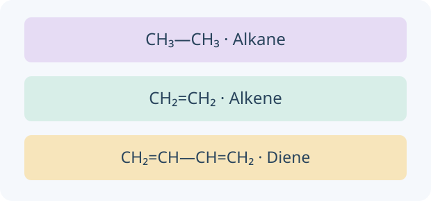

Organic Chemistry
Follow hydrocarbons from a candle and a refinery to functional groups, useful polymers and condensation reactions.

Build the idea, one step at a time.
Organic chemistry connects carbon structures with properties and transformations. Carbon commonly forms four bonds in the simple models used here. Read the complete structure and functional group: a molecular formula counts atoms but does not uniquely identify how they are joined.
An open-chain alkane has only single carbon–carbon bonds; an alkene has a C=C bond, and a diene has two. Distillation separates molecules by boiling behaviour; cracking changes bonds and produces new molecules while conserving atoms. A functional group such as –OH or –COOH can determine important patterns of reactivity, but the rest of the molecule also matters.

01 · Combustion and its products
Complete combustion of a hydrocarbon forms CO₂ and H₂O. Limited oxygen can produce CO and/or soot as well as water and some CO₂. A candle’s yellow colour alone is not a reliable measure of complete combustion.
02 · Crude oil and fractional distillation
Crude oil is a mixture, mainly of hydrocarbons. Fractional distillation separates by boiling ranges: vapours rise through a hot-bottom, cool-top column. Smaller alkanes tend to be more volatile, less viscous and easier to ignite than larger ones.
03 · Alkanes, alkenes and dienes
Acyclic alkanes have CₙH₂ₙ₊₂ and only single carbon–carbon bonds. Acyclic alkenes with one C=C have CₙH₂ₙ. An acyclic diene has two C=C bonds in the same chain and formula CₙH₂ₙ₋₂. These formulas assume no rings.
04 · Cracking, dehydrogenation and bromine water
Cracking breaks long hydrocarbons into shorter products, often including alkenes. The optional diene challenge models a cracking and dehydrogenation pathway that also releases H₂. This is one possible balanced channel; actual products depend on conditions and form a mixture. Alkenes decolourise bromine by addition under the comparison conditions.
05 · Addition polymers
Alkene double bonds open and monomers join to form a carbon-chain polymer. All monomer atoms are retained and no small molecule is released. Repeat units include substituents; chain ends are normally omitted from the repeat-unit notation.
06 · Alcohols, carboxylic acids and esters
An alcohol contains an –OH group outside a carboxyl group. Carboxylic acids contain –COOH and are commonly weak acids. Esters contain –COO– and can form reversibly from an alcohol and carboxylic acid with acid catalysis.
07 · Amines and amides
Amines contain nitrogen bonded to carbon and/or hydrogen, with a lone pair that can accept H⁺. Amides have nitrogen directly attached to a carbonyl carbon. Lone-pair delocalisation makes amides much less basic than comparable amines.
08 · Polyesters and polyamides
A diol plus a dicarboxylic acid can form a polyester; a diamine plus a dicarboxylic acid can form a polyamide. Two reactive groups per monomer allow chain growth. Water forms in these acid + alcohol/amine condensation routes.
You can read these explanations without operating the simulator. The practical activities, games and revision below let you apply the ideas and check your reasoning.
Now investigate →Choose an investigation
Make a prediction, choose the conditions and use the apparatus on the bench. Drag equipment into place, turn switches and watch the reaction. Need a hand? Use Help with this step. Record your evidence before answering the explanation question.
Preparing your experiment…
Choose conditions Sample, quantities and equipment
Use the equipment directly on the bench. Drag, click or tap the highlighted apparatus.
Record and compare your observations.
Your notebook stays while you explore this page. Reloading clears it. Practical notes and lesson checks are not sent to the teacher.
Use the evidence
Connect the practical to the chemistry
Combustion and its products
Complete combustion of a hydrocarbon forms CO₂ and H₂O. Limited oxygen can produce CO and/or soot as well as water and some CO₂. A candle’s yellow colour alone is not a reliable measure of complete combustion.
Example. CH₄ + 2O₂ → CO₂ + 2H₂O. Anhydrous CuSO₄ turns white to blue in the presence of water; CO₂ turns limewater milky.
Crude oil and fractional distillation
Crude oil is a mixture, mainly of hydrocarbons. Fractional distillation separates by boiling ranges: vapours rise through a hot-bottom, cool-top column. Smaller alkanes tend to be more volatile, less viscous and easier to ignite than larger ones.
Example. A component condenses where the local column temperature falls to its boiling point. Fractions are mixtures with overlapping boiling ranges; distillation does not crack C–C bonds.
Alkanes, alkenes and dienes
Acyclic alkanes have CₙH₂ₙ₊₂ and only single carbon–carbon bonds. Acyclic alkenes with one C=C have CₙH₂ₙ. An acyclic diene has two C=C bonds in the same chain and formula CₙH₂ₙ₋₂. These formulas assume no rings.
Example. Butane is C₄H₁₀, butene is C₄H₈ and buta-1,3-diene is C₄H₆: CH₂=CH–CH=CH₂. Carbon still forms four bonds in every case.
Cracking, dehydrogenation and bromine water
Cracking breaks long hydrocarbons into shorter products, often including alkenes. The optional diene challenge models a cracking and dehydrogenation pathway that also releases H₂. This is one possible balanced channel; actual products depend on conditions and form a mixture. Alkenes decolourise bromine by addition under the comparison conditions.
Example. Standard: C₁₀H₂₂ → C₈H₁₈ + C₂H₄. Challenge: C₁₀H₂₂ → C₆H₁₄ + C₄H₆ + H₂. Both conserve 10 carbon atoms and 22 hydrogen atoms. Hydrogen production is not required in every cracking equation.
Addition polymers
Alkene double bonds open and monomers join to form a carbon-chain polymer. All monomer atoms are retained and no small molecule is released. Repeat units include substituents; chain ends are normally omitted from the repeat-unit notation.
Example. Ethene gives [–CH₂–CH₂–]ₙ. Propene gives [–CH₂–CH(CH₃)–]ₙ; the CH₃ group stays as a side group.
Alcohols, carboxylic acids and esters
An alcohol contains an –OH group outside a carboxyl group. Carboxylic acids contain –COOH and are commonly weak acids. Esters contain –COO– and can form reversibly from an alcohol and carboxylic acid with acid catalysis.
Example. CH₃COOH + C₂H₅OH ⇌ CH₃COOC₂H₅ + H₂O produces ethyl ethanoate. The alcohol supplies the alkyl part of the ester name.
Amines and amides
Amines contain nitrogen bonded to carbon and/or hydrogen, with a lone pair that can accept H⁺. Amides have nitrogen directly attached to a carbonyl carbon. Lone-pair delocalisation makes amides much less basic than comparable amines.
Example. CH₃NH₂ is methylamine. CH₃CONH₂ is ethanamide. Do not identify every nitrogen-containing compound as an amine.
Polyesters and polyamides
A diol plus a dicarboxylic acid can form a polyester; a diamine plus a dicarboxylic acid can form a polyamide. Two reactive groups per monomer allow chain growth. Water forms in these acid + alcohol/amine condensation routes.
Example. Joining 2n bifunctional monomers into one finite linear chain makes 2n − 1 links and releases 2n − 1 waters. Textbook repeat-unit equations often neglect the two end groups.
Continue investigating
These self-contained activities follow the syllabus. Read the explanations, make a prediction and compare your observations. The virtual model provides its own steps and feedback.
Try it. Solve it. Play again.
Molecule Families and Carbon Chain Studio: move cards, build a model and use feedback to work out the next step.
Before the questions and games
Study the preparation notes and worked examples →
Learn the vocabulary, follow the reasoning and compare a model solution before trying the revision simulator or question games.
Ready to test your understanding?
Choose from 80 questions on organic chemistry. Tick your areas and levels, practise with explanations or take a Test yourself quiz, then retry the questions you missed.